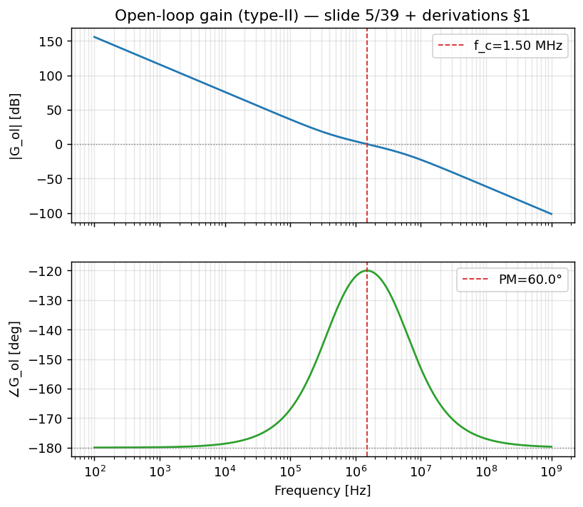
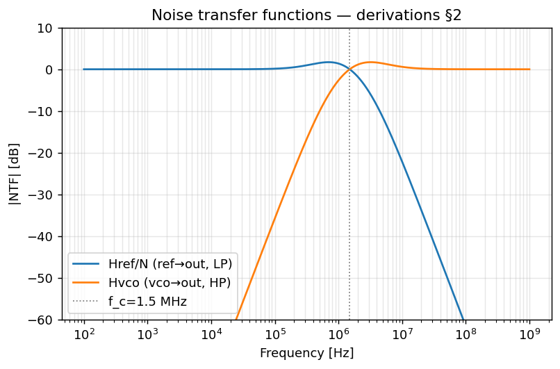
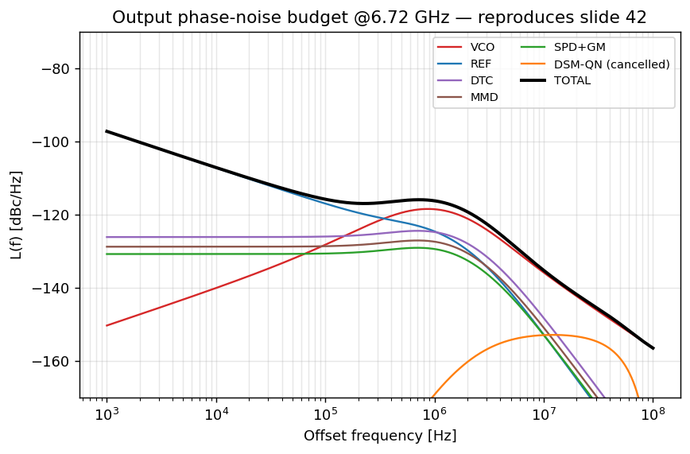
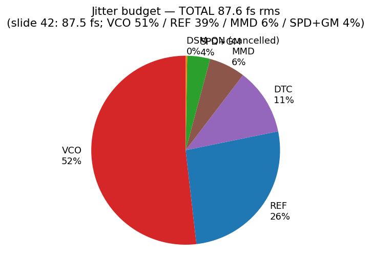

Frequency-Domain Analysis
A small-signal, s-domain model of the DTC-assisted fractional-N sampling PLL: open-loop gain, closed-loop noise transfer functions, the per-source jitter budget that reproduces slide 42 (87.6 fs rms / -51.6 dBc), and the sanity checks that confirm it all hangs together.
models/frequency_domain_model.py and exported to
site/assets/data/freq_domain.json; the numbered slide tags point at the deck
(W. Wu, Samsung), and the green derived tags point at
docs/derivations.md §1, §2, §8. Read the open-loop section first, then the NTFs,
then the budget.
Interactive phase-noise & loop explorer
Drag the sliders to see how the loop bandwidth, phase margin and each noise floor reshape the
output phase-noise budget and the integrated jitter — recomputed live in your browser by
assets/app/pll.js, a direct port of frequency_domain_model.py that
reproduces 87.6 fs at the defaults model. Toggle
"DTC cancels DSM-QN" off to see why a fractional-N PLL without a DTC is hopeless
(jitter explodes to ~45 ps), and press "Switch to Bode view" for the open-loop gain
and phase margin.
Try this: lower the loop bandwidth and watch the VCO/REF crossover move down — less reference multiplication but more VCO noise in band. That REF-vs-VCO trade-off is exactly what slide 42 says sets the PLL bandwidth .
1. Why a frequency-domain model at all?
A PLL is a feedback loop, and feedback loops are easiest to reason about in the frequency domain. The phase-domain block diagram on is the canonical linear model textbook (Razavi/Gardner): a phase detector, a loop filter, a VCO modeled as an integrator derived, and a feedback divider $1/N$. Two questions follow immediately:
- Stability & speed. How fast does the loop respond, and does it ring? → the open-loop gain $G_\text{ol}(s)$, its crossover $f_c$, and its phase margin (PM).
- Noise. Every block injects noise at a different node. The loop low-passes some sources and high-passes others. → the closed-loop noise transfer functions (NTFs) and the integrated jitter budget.
Top-level numbers — for f_out, f_ref; assumption [A1]/[A2] for f_c, PM; derived $N=6.72\text{ GHz}/104\text{ MHz}=64.615$ (freq_domain.json).
2. Open-loop gain $G_\text{ol}(s)$ — a type-II loop
2.1 The model
The proposed loop has two poles at the origin: one from the VCO (control voltage → phase is an integration, $K_\text{VCO}/s$) and one from the integral path of the loop filter (the $V_\text{ctrl,I}$ path on ). Two integrators give $-180^\circ$ of phase at all frequencies, which would be marginally stable — so a zero (the proportional $V_\text{ctrl,P}$ path) is added to pull the phase back up near crossover, and a high-frequency pole cleans up ripple. That is a textbook type-II second-order loop textbook (Gardner, "Phaselock Techniques"). The model in code uses the compact form derived:
$$ G_\text{ol}(s) \;=\; K_\text{loop}\,\frac{1 + s/\omega_z}{s^{2}\,\bigl(1 + s/\omega_p\bigr)} $$The $s^2$ in the denominator is the two origin poles; $\omega_z$ is the stabilizing zero; $\omega_p$ is the HF pole. Forward gain is $K_\text{PD}\,H_\text{LF}(s)\,K_\text{VCO}/s$ and the open loop folds in the $1/N$ feedback derived (derivations §1): $G_\text{ol}(s) = K_\text{PD}\,H_\text{LF}(s)\,(K_\text{VCO}/s)\,(1/N)$.
2.2 The symmetric design recipe (f_c, PM → zero & pole)
We do not pick $\omega_z$, $\omega_p$, $K_\text{loop}$ by hand; we solve for them from the two design targets. Place the zero and pole symmetrically (in log-frequency) about the crossover $\omega_c = 2\pi f_c$. For a symmetric type-II loop the phase margin is $\text{PM} = 2\arctan(k) - 90^\circ$ derived, which inverts to:
$$ k \;=\; \tan\!\Bigl(\tfrac{\text{PM} + 90^\circ}{2}\Bigr),\qquad \omega_z = \frac{\omega_c}{k},\qquad \omega_p = \omega_c\, k . $$Then the gain constant $K_\text{loop}$ is fixed by forcing $|G_\text{ol}(j\omega_c)| = 1$ (unity gain at crossover). With $f_c = 1.5$ MHz and PM $= 60^\circ$ this gives $k = \tan(75^\circ) \approx 3.73$, so (from freq_domain.json):
$\omega_z = 2.525\times10^{6}$ rad/s → 402 kHz; $\omega_p = 3.517\times10^{7}$ rad/s → 5.60 MHz;
$K_\text{loop} = 2.38\times10^{13}$ — all derived in
PLLParams._design_type2_loop(). $K_\text{VCO}$ is assumption [A4].
GIVEN. $f_c = 1.5$ MHz assumption [A1], $\text{PM}=60^\circ$ assumption [A2]. So $\omega_c = 2\pi f_c = 9.4248\times10^{6}$ rad/s.
STEP 1 — spacing factor. Invert $\text{PM}=2\arctan(k)-90^\circ$:
$$ k=\tan\!\Bigl(\tfrac{\text{PM}+90^\circ}{2}\Bigr)=\tan\!\Bigl(\tfrac{60^\circ+90^\circ}{2}\Bigr)=\tan(75^\circ)=3.7321. $$STEP 2 — zero and pole, symmetric about $f_c$.
$$ f_z=\frac{f_c}{k}=\frac{1.5\text{ MHz}}{3.7321}=401.9\text{ kHz},\qquad f_p=f_c\,k=1.5\text{ MHz}\times3.7321=5.598\text{ MHz}. $$(i.e. $\omega_z=2.5254\times10^{6}$, $\omega_p=3.5174\times10^{7}$ rad/s.)
STEP 3 — gain constant from unity-gain-at-crossover. Demand $|G_\text{ol}(j\omega_c)|=1$. The pure shape factor evaluated at $j\omega_c$ is
$$ \Bigl|\tfrac{1+j\omega_c/\omega_z}{(j\omega_c)^2\,(1+j\omega_c/\omega_p)}\Bigr| = 4.2015\times10^{-14},\qquad K_\text{loop}=\frac{1}{4.2015\times10^{-14}}=2.380\times10^{13}. $$SANITY CHECK. Geometric-mean crossover $\sqrt{f_z f_p}=\sqrt{401.9\text{ kHz}\times5.598\text{ MHz}}=1.500$ MHz $=f_c$ ✓, and plugging back gives $|G_\text{ol}(j\omega_c)|=1.000$ with $\angle G_\text{ol}=-120^\circ$, so $\text{PM}=180^\circ-120^\circ=60^\circ$ ✓ — matching the numerically-extracted $f_c=1.501$ MHz / PM $=59.99^\circ$ in §6 model.

frequency_domain_model.py::open_loop; design per
+ derivations §1.
Interactive: type-I vs type-II — why two integrators (and a zero)
Overlay the closed-loop reference transfer \(|H_{\rm ref}/N|\) for the proposed type-II loop (two integrators + a stabilizing zero) against a type-I loop (single VCO integrator) at the same crossover. Type-II tracks a frequency ramp with zero steady-state error, but its zero makes it peak (~1.70 dB); type-I never peaks but cannot null a frequency error and has a much higher PM (no zero needed). Drag \(f_c\) and the type-II phase margin and watch the peak move. model textbook
3. Closed-loop noise transfer functions (NTFs)
Close the loop and two master transfer functions appear. With $G \equiv G_\text{ol}(s)$ derived (derivations §1) textbook:
Reference → output (low-pass)
$$ H_\text{ref}(s) = \frac{\Phi_\text{out}}{\Phi_\text{ref}} = \frac{N\,G}{1+G} $$- LF ($f\!\to\!0$, $G\!\to\!\infty$): $H_\text{ref}\to N$. The output phase tracks the reference, scaled by the divide ratio. DC gain = $N = 64.62$.
- HF ($f\!\gg\!f_c$, $G\!\to\!0$): $H_\text{ref}\to 0$. The loop cannot follow fast reference jitter — it is low-passed at $f_c$.
Anything that enters with the reference (CKREF noise, DTC QN/thermal, calibration residual) shares this LP shape.
GIVEN. $H_\text{ref}(s)=N\,G/(1+G)$ with $N=f_\text{out}/f_\text{ref}=6.72\text{ GHz}/104\text{ MHz}=64.615$ derived, and $G\equiv G_\text{ol}(s)$ the type-II open loop (two poles at the origin).
STEP 1 — how big is $G$ at low offset? The $s^{-2}$ from the two integrators makes $G$ huge in band. Evaluating the model:
$$ |G_\text{ol}(j2\pi\cdot100\text{ Hz})|=6.03\times10^{7},\qquad |G_\text{ol}(j2\pi\cdot1\text{ kHz})|=6.03\times10^{5}. $$STEP 2 — take the limit. With $G\gg1$, $\dfrac{G}{1+G}\to1$, so
$$ H_\text{ref}(0)=N\cdot\lim_{G\to\infty}\frac{G}{1+G}=N\cdot1=64.615. $$SANITY CHECK. The model returns $|H_\text{ref}|=64.6154$ at 1, 10, 100, and 1000 Hz — flat to 5 digits and equal to $N$ model, exactly the §6 check “$H_\text{ref}(0)\to64.62$, pass.” Physically: in band the loop forces the output phase to track the reference, multiplied up by the divide ratio. By the same algebra $H_\text{vco}=1/(1+G)\to1/(6\times10^{7})\approx0$ at DC — the loop scrubs VCO noise inside $f_c$.
VCO → output (high-pass)
$$ H_\text{vco}(s) = \frac{\Phi_\text{out}}{\Phi_\text{vco}} = \frac{1}{1+G} $$- LF ($G\!\to\!\infty$): $H_\text{vco}\to 0$. Inside the loop bandwidth the feedback suppresses VCO noise — the loop "cleans up" the oscillator.
- HF ($G\!\to\!0$): $H_\text{vco}\to 1$. Outside the bandwidth the VCO runs free; its own phase noise passes straight to the output unattenuated.
This is the classic trade: widen $f_c$ to suppress more VCO noise, but then more reference/DTC noise leaks in. The 1.5 MHz BW is the chosen compromise.

H_ref, H_vco; derivations §1-§2.
4. Per-source noise transfer functions to output phase
Each noise source enters the loop at a different node, so each has its own NTF. The table below is
the one in docs/derivations.md §2 derived
textbook, written in terms of $G \equiv G_\text{ol}(s)$.
| Source | Enters at | NTF to Φout | LF (f→0) | HF (f→∞) | Character | Source |
|---|---|---|---|---|---|---|
| Reference phase $\Phi_\text{ref}$ | input | $N\,G/(1+G)$ | $\to N$ | $\to 0$ | low-pass, ×N | std |
| PD / SPD input-referred | input (after ÷N) | $N\,G/(1+G)$ | $\to N$ | $\to 0$ | low-pass | std |
| Divider phase $\Phi_\text{div}$ | feedback | $-N\,G/(1+G)$ | $\to -N$ | $\to 0$ | low-pass | std |
| DSM quant. $Q_\text{DSM}$ | feedback (×2π) | $N\,G/(1+G)\cdot(1-z^{-1})^{m}$ | LP × HPF | rolls off | band-pass-ish, cancelled by DTC | Riley'93 |
| DTC QN / thermal | reference path | $N\,G/(1+G)$ | $\to N$ | $\to 0$ | low-pass (inband) | |
| Loop-filter noise $V_\text{lf}$ | after PD | $(K_\text{VCO}/s)/(1+G)$ | band-pass | $\to 0$ fast | band-pass | derived |
| VCO phase $\Phi_\text{vco}$ | output | $1/(1+G)$ | $\to 0$ | $\to 1$ | high-pass | std |
| Calibration residual $\Phi_\text{cal}$ | reference path (DTC code) | $N\,G/(1+G)$ | $\to N$ | $\to 0$ | low-pass | derived |
5. Jitter budget — reproducing slide 42
To get a single number we (a) multiply each source's input PSD by $|{\rm NTF}|^2$ to refer it to the
output, (b) integrate over the band $1$ kHz – $100$ MHz to get a variance $\sigma_\phi^2$, and
(c) convert to RMS jitter $\sigma_t = \sigma_\phi/(2\pi f_\text{out})$
textbook (derivations §8). The input noise levels are
assumption [A12]–[A15], deliberately back-solved to reproduce
the slide-42 split. The result (from freq_domain.json):
| Source | σφ [rad] | Jitter [fs] | % of variance | NTF shape |
|---|---|---|---|---|
| VCO | 2.662e-3 | 63.06 | 51.82% | high-pass |
| REF (CKREF) | 1.900e-3 | 44.99 | 26.38% | low-pass |
| DTC (QN+thermal) | 1.249e-3 | 29.58 | 11.40% | low-pass |
| MMD (divider) | 0.922e-3 | 21.83 | 6.21% | low-pass |
| SPD + GM | 0.732e-3 | 17.34 | 3.92% | low-pass |
| DSM-QN (cancelled) | 0.190e-3 | 4.49 | 0.26% | cancelled |
| TOTAL | 3.699e-3 | 87.60 | 100% | IPN = −51.6 dBc (SSB) |
utils.ipn_dbc ssb=True) textbook (derivations §8), giving
−51.6 dBc model ≈ −51.7 dBc
; note the $\pm 3$ dB SSB↔DSB ambiguity flagged below.

output_contributions.

jitter_budget.
5.1 Where the DTC numbers come from
The DTC contributes via two white floors injected on the reference path :
- Quantization noise. $\mathcal{L}_\text{DTC,QN} = \dfrac{(2\pi\,T_\text{res})^2}{12}\,f_\text{ref}$ with $T_\text{res} = 400$ fs and $f_\text{ref} = 104$ MHz gives $-162.6$ dBc/Hz derived (derivations §3); the slide rounds to $-163$ dBc/Hz.
- Thermal floor. $-171$ dBc/Hz , set by the sampled $kT/C$ converted to timing through the slew rate.
Both are low-passed by $H_\text{ref}$, so they only matter inside $f_c$.
GIVEN. Two flat floors injected on the reference path: DTC QN $=-163$ dBc/Hz and DTC thermal $=-171$ dBc/Hz . Band $1\text{ kHz}\!-\!100\text{ MHz}$ assumption [A16]. $f_\text{out}=6.72$ GHz, $N=64.615$.
STEP 1 — dBc/Hz → phase PSD (with $\mathcal{L}=10\log_{10}(\tfrac12 S_\phi)$, so $S_\phi=2\cdot10^{\mathcal{L}/10}$) textbook (IEEE-1139):
$$ S_{\phi,\text{QN}}=2\cdot10^{-16.3}=1.002\times10^{-16},\quad S_{\phi,\text{th}}=2\cdot10^{-17.1}=1.589\times10^{-17}, $$ $$ S_{\phi,\text{DTC}}=1.161\times10^{-16}\ \text{rad}^2/\text{Hz (flat)}. $$STEP 2 — refer to output and integrate. The DTC sees the low-pass $H_\text{ref}$, so $\sigma_\phi^2=\int S_{\phi,\text{DTC}}\,|H_\text{ref}|^2\,df = S_{\phi,\text{DTC}}\,N^2\!\int|H_\text{ref}/N|^2\,df$. The shape integral is an effective noise bandwidth $\text{ENBW}=3.218$ MHz $(\approx2.14\,f_c)$ model:
$$ \sigma_\phi^2 = (1.161\times10^{-16})\,(64.615^2)\,(3.218\times10^{6})=1.560\times10^{-6}\ \text{rad}^2, $$ $$ \sigma_\phi=1.249\times10^{-3}\ \text{rad}. $$STEP 3 — convert to jitter and to dBc:
$$ \sigma_t=\frac{\sigma_\phi}{2\pi f_\text{out}}=\frac{1.249\times10^{-3}}{2\pi\cdot6.72\times10^{9}}=29.6\ \text{fs},\qquad \text{IPN}=10\log_{10}\!\bigl(\tfrac12\sigma_\phi^2\bigr)=-61.1\ \text{dBc}. $$SANITY CHECK. This is exactly the DTC row of the §5 table (29.58 fs, 11.4% of variance) model. Round-trip: $2\pi f_\text{out}\sigma_t=2\pi\cdot6.72\text{ GHz}\cdot29.58\text{ fs}=1.249\times10^{-3}$ rad recovers $\sigma_\phi$ ✓. Every other low-pass row (REF, MMD, SPD+GM) is the same three steps with its own flat floor; the VCO row uses $|H_\text{vco}|^2$ on a sloped PSD instead.
6. Sanity checks (derivations §H) — all pass
The model is only trustworthy if it satisfies the structural checks that any correct PLL model must.
These are verified in tests/test_frequency_domain.py
derived (derivations §1, §H):
| Check | Expectation | Result | Status |
|---|---|---|---|
| DC gain of $H_\text{ref}$ | $H_\text{ref}(0)\to N$ | $\to 64.62$ | pass |
| VCO HP suppression | $H_\text{vco}\to 0$ at LF, $\to 1$ at HF | monotone, →1 | pass |
| Crossover $f_c$ extracted | target 1.5 MHz | 1.501 MHz | pass |
| Phase margin extracted | target 60° | 59.99° | pass |
| Monotonic intuition | $|G_\text{ol}|$ falls through crossover; LP/HP cross at $f_c$ | confirmed | pass |
| Time↔freq cross-check | same $\sigma_t$ both ways | 88.2 vs 87.4 fs (+0.08 dB) | pass |
The crossover and PM are extracted numerically from the computed $G_\text{ol}$ (not from the design formulas), so getting 1.501 MHz / 59.99° back is an independent confirmation that the symmetric-design recipe in §2.2 was implemented correctly. The time↔frequency cross-check (88.2 fs from the time-domain std vs 87.4 fs from integrating the PSD, agreeing to +0.08 dB, with Parseval matching) ties this page to the time-domain page derived (derivations §9).
docs/derivations.md §1–§3, §5, §8–§9.
Noise levels: docs/assumptions.md [A1]–[A15], back-solved to the slide-42 split.
All numbers above are emitted by models/frequency_domain_model.py into
site/assets/data/freq_domain.json and checked by tests/test_frequency_domain.py.